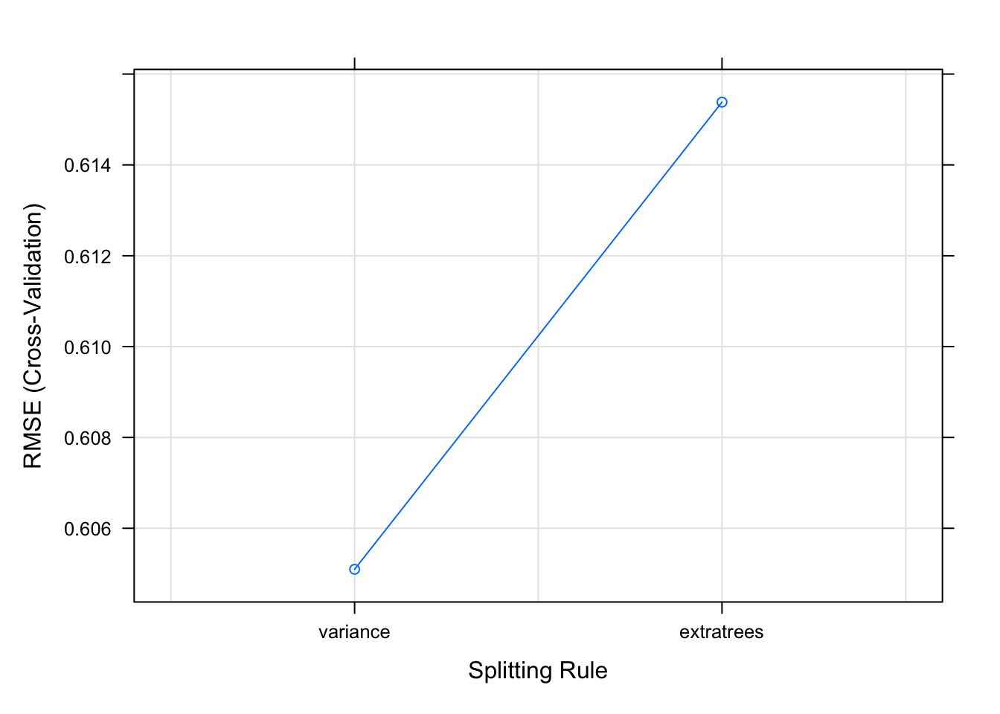
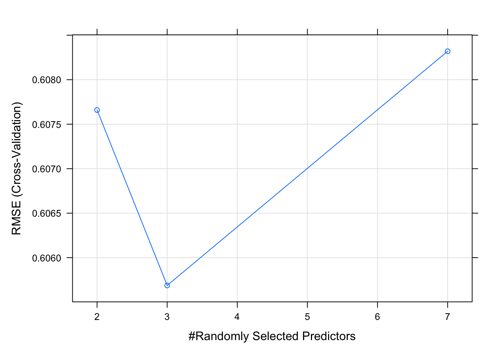

Chapter 17 Modeling
library(tidyverse)
library(rpart)17.1 Resources:
Stefania Ashby has nice observations and comments her code very well at https://neurospection.netlify.app/post/machine-learning-basics-with-caret
17.2 Classification: what I’m really interested in
Four types of classification are common in ML. See https://machinelearningmastery.com/types-of-classification-in-machine-learning/. Jason Brownlee’s list includes:
- Binary
- Multi-class
- Multi-label
- Imbalanced
I think that binary, multiclass, and multilabel can all be imbalanced or balanced.
While multilabel classification is interesting (see, for example, https://www.r-bloggers.com/2017/03/multilabel-classification-with-mlr/), it will not be addressed in these notes.
17.3 Class imbalance: a critical issue in pituitary adenoma classification
Fundamental to modeling pituitary adenoma classification is the notion of class imbalance, which must be acknowledged in the modeling process, even if my options to address it are limited.
Resources for class imbalance:
- https://www.svds.com/learning-imbalanced-classes/
- https://dpmartin42.github.io/posts/r/imbalanced-classes-part-1
- https://rstudio-pubs-static.s3.amazonaws.com/607601_57a11284917f4d79933f4c4db3d41713.html
One of the cleanest approaches to datasets with marked class imbalances is seen in the DKFZ approach to DNA methylation profile classes. Their extensive use of dimension reduction, especially t-SNE plots, seems to graphically address the problem. A small cloud, remote from other clouds in a t-SNE plot, makes a pretty compelling argument for the existence of a separate class.
17.4 Modeling notes
Notes on/inspired by the Machine Learning with caret in R DataCamp course. I’d like to better understand machine learning, especially as it pertains to classification problems. Most discussions begin with regression examples, so these will also be addressed in order to build a better foundation. This is the general approach of James, Witten, Hastie and Tibshirani in An Introduction to Statistical Learning with Applications in R, 2nd edition7 too.
But let’s back up and consider the whole rationale behind modeling: according to Haley Wickham in R4DS,
The goal of a model is to provide a simple low-dimensional summary of a dataset.
Modeling is a mode of supervised learning, which can be divided into classification and regression.
Root mean squared error, RMSE, is an important concept in regression problems. For a review of what is meant by RMSE, see this Wikipedia page: https://en.wikipedia.org/wiki/Root-mean-square_deviation. The units RMSE are the same as the original data, so it is very interpretable.
It’s worth taking a more careful look at RMSE, and practicing with it, to illustrate the underlying methods of regression before we get into caret.
glimpse(diamonds)## Rows: 53,940
## Columns: 10
## $ carat <dbl> 0.23, 0.21, 0.23, 0.29, 0.31, 0.24, 0.24, 0.26, 0.22, 0.23, 0.…
## $ cut <ord> Ideal, Premium, Good, Premium, Good, Very Good, Very Good, Ver…
## $ color <ord> E, E, E, I, J, J, I, H, E, H, J, J, F, J, E, E, I, J, J, J, I,…
## $ clarity <ord> SI2, SI1, VS1, VS2, SI2, VVS2, VVS1, SI1, VS2, VS1, SI1, VS1, …
## $ depth <dbl> 61.5, 59.8, 56.9, 62.4, 63.3, 62.8, 62.3, 61.9, 65.1, 59.4, 64…
## $ table <dbl> 55, 61, 65, 58, 58, 57, 57, 55, 61, 61, 55, 56, 61, 54, 62, 58…
## $ price <int> 326, 326, 327, 334, 335, 336, 336, 337, 337, 338, 339, 340, 34…
## $ x <dbl> 3.95, 3.89, 4.05, 4.20, 4.34, 3.94, 3.95, 4.07, 3.87, 4.00, 4.…
## $ y <dbl> 3.98, 3.84, 4.07, 4.23, 4.35, 3.96, 3.98, 4.11, 3.78, 4.05, 4.…
## $ z <dbl> 2.43, 2.31, 2.31, 2.63, 2.75, 2.48, 2.47, 2.53, 2.49, 2.39, 2.…# Fit lm model: model
model <- lm(price ~ ., diamonds)
# Predict on full data: p
p <- predict(model, diamonds)
# Compute errors: error
error <- p - diamonds$price
# Calculate RMSE
sqrt(mean(error^2))## [1] 1129.843Note that the RMSE in this case is $1129.84, which is in keeping with what we know about the price of diamonds, which range from $326 to $18823 and average $3932.8.
Within-sample RMSE always overestimates model accuracy–the model only “knows” what it has encountered, not what the rest of the universe holds in store. Hence, out-of-sample data is checked with the model by some means. A separate “validation set” of sample points is provided (as we did when we moved from exploration to validation in our first pituitary adenoma paper).
Zach Mayer states this another way:
In-sample validation almost guarantees overfitting.
So in the wide world and blue, this is perhaps the nicest intellectual defense of study abroad, of learning the perspectives, habits, and languages of others in order to avoid overfitting of our mental models to local norms.
Sample size cannot always grow, however: samples are expensive. caret simulates the process of having a validation set and permits the progressive refinement of a model.
17.5 Out of sample error example
This example from the DataCamp course divides diamonds into test and training sets. Note the assumptions that get built into the process: the use of 80% train/20% test, for instance. How does one arrive at this figure?
# Set seed
set.seed(42)
# Shuffle row indices in case the data set is
# inhomogeneous: rows
rows <- sample(nrow(diamonds))
# Randomly order data
shuffled_diamonds <- diamonds[rows, ]
# Determine row to split on: split
split <- round(nrow(diamonds) * 0.8)
# Create train
train <- diamonds[1:split, ]
# Create test
test <- diamonds[(split + 1):nrow(diamonds), ]
# Fit lm model on train: model
model <- lm(price ~ ., train)
# Predict on test: p
p <- predict(model, test)
# Compute errors: error
error <- p - test$price
# Calculate RMSE
sqrt(mean(error^2))## [1] 796.8922So the RMSE for the model of diamond price, as measured by dividing the set this way, is $796.89.
17.6 A regression example from the course, this time using caret
Note that the train() function has the method characteristic that can choose the type of model and that the trainControl() function has a method that determines cross validation. The number characteristic refers to the number of folds of cross validation. 10-fold cross validation is common, but takes more time than the use of smaller numbers. 5-fold will be used here to improve the speed of the processing.
library(caret)
model <- train(price ~ ., diamonds, method = "lm", trControl = trainControl(method = "cv",
number = 5, verboseIter = TRUE))## + Fold1: intercept=TRUE
## - Fold1: intercept=TRUE
## + Fold2: intercept=TRUE
## - Fold2: intercept=TRUE
## + Fold3: intercept=TRUE
## - Fold3: intercept=TRUE
## + Fold4: intercept=TRUE
## - Fold4: intercept=TRUE
## + Fold5: intercept=TRUE
## - Fold5: intercept=TRUE
## Aggregating results
## Fitting final model on full training set# Print model to console
model## Linear Regression
##
## 53940 samples
## 9 predictor
##
## No pre-processing
## Resampling: Cross-Validated (5 fold)
## Summary of sample sizes: 43152, 43152, 43152, 43152, 43152
## Resampling results:
##
## RMSE Rsquared MAE
## 1137.965 0.9186084 741.3386
##
## Tuning parameter 'intercept' was held constant at a value of TRUENote that caret handles the work of splitting test sets and calculating RMSE.
Another example from the DataCamp course.
library(MASS)
# Fit lm model using 5-fold CV: model
model <- train(medv ~ ., Boston, method = "lm", trControl = trainControl(method = "cv",
number = 5, verboseIter = TRUE))## + Fold1: intercept=TRUE
## - Fold1: intercept=TRUE
## + Fold2: intercept=TRUE
## - Fold2: intercept=TRUE
## + Fold3: intercept=TRUE
## - Fold3: intercept=TRUE
## + Fold4: intercept=TRUE
## - Fold4: intercept=TRUE
## + Fold5: intercept=TRUE
## - Fold5: intercept=TRUE
## Aggregating results
## Fitting final model on full training set# Print model to console
model## Linear Regression
##
## 506 samples
## 13 predictor
##
## No pre-processing
## Resampling: Cross-Validated (5 fold)
## Summary of sample sizes: 405, 405, 405, 403, 406
## Resampling results:
##
## RMSE Rsquared MAE
## 4.811293 0.7238097 3.375276
##
## Tuning parameter 'intercept' was held constant at a value of TRUECross validation can itself be repeated. The following is a 5-fold cross validation repeated 5 times.
# Fit lm model using 5 x 5-fold CV: model
model <- train(medv ~ ., Boston, method = "lm", trControl = trainControl(method = "repeatedcv",
number = 5, repeats = 5, verboseIter = TRUE))## + Fold1.Rep1: intercept=TRUE
## - Fold1.Rep1: intercept=TRUE
## + Fold2.Rep1: intercept=TRUE
## - Fold2.Rep1: intercept=TRUE
## + Fold3.Rep1: intercept=TRUE
## - Fold3.Rep1: intercept=TRUE
## + Fold4.Rep1: intercept=TRUE
## - Fold4.Rep1: intercept=TRUE
## + Fold5.Rep1: intercept=TRUE
## - Fold5.Rep1: intercept=TRUE
## + Fold1.Rep2: intercept=TRUE
## - Fold1.Rep2: intercept=TRUE
## + Fold2.Rep2: intercept=TRUE
## - Fold2.Rep2: intercept=TRUE
## + Fold3.Rep2: intercept=TRUE
## - Fold3.Rep2: intercept=TRUE
## + Fold4.Rep2: intercept=TRUE
## - Fold4.Rep2: intercept=TRUE
## + Fold5.Rep2: intercept=TRUE
## - Fold5.Rep2: intercept=TRUE
## + Fold1.Rep3: intercept=TRUE
## - Fold1.Rep3: intercept=TRUE
## + Fold2.Rep3: intercept=TRUE
## - Fold2.Rep3: intercept=TRUE
## + Fold3.Rep3: intercept=TRUE
## - Fold3.Rep3: intercept=TRUE
## + Fold4.Rep3: intercept=TRUE
## - Fold4.Rep3: intercept=TRUE
## + Fold5.Rep3: intercept=TRUE
## - Fold5.Rep3: intercept=TRUE
## + Fold1.Rep4: intercept=TRUE
## - Fold1.Rep4: intercept=TRUE
## + Fold2.Rep4: intercept=TRUE
## - Fold2.Rep4: intercept=TRUE
## + Fold3.Rep4: intercept=TRUE
## - Fold3.Rep4: intercept=TRUE
## + Fold4.Rep4: intercept=TRUE
## - Fold4.Rep4: intercept=TRUE
## + Fold5.Rep4: intercept=TRUE
## - Fold5.Rep4: intercept=TRUE
## + Fold1.Rep5: intercept=TRUE
## - Fold1.Rep5: intercept=TRUE
## + Fold2.Rep5: intercept=TRUE
## - Fold2.Rep5: intercept=TRUE
## + Fold3.Rep5: intercept=TRUE
## - Fold3.Rep5: intercept=TRUE
## + Fold4.Rep5: intercept=TRUE
## - Fold4.Rep5: intercept=TRUE
## + Fold5.Rep5: intercept=TRUE
## - Fold5.Rep5: intercept=TRUE
## Aggregating results
## Fitting final model on full training set# Print model to console
model## Linear Regression
##
## 506 samples
## 13 predictor
##
## No pre-processing
## Resampling: Cross-Validated (5 fold, repeated 5 times)
## Summary of sample sizes: 405, 404, 404, 406, 405, 405, ...
## Resampling results:
##
## RMSE Rsquared MAE
## 4.8764 0.722424 3.421333
##
## Tuning parameter 'intercept' was held constant at a value of TRUEp <- predict(model, Boston)
error <- p - Boston$medv
sqrt(mean(error^2))## [1] 4.67919117.7 Classification
17.7.1 An rpart classification example.
model <- rpart(Species ~ ., data = iris, method = "class")
predicted <- predict(model, iris, type = "class")
head(predicted)## 1 2 3 4 5 6
## setosa setosa setosa setosa setosa setosa
## Levels: setosa versicolor virginicaStudy what’s going on in predict():
# ?predict.rpartSo predict() uses the model to assign a predicted value to Species based on the rest of the iris dataset data.
The accuracy of this prediction can be tested by comparing this vector to the original Species.
mean(predicted == iris$Species)## [1] 0.9617.8 From the DataCamp course
library(mlbench)
data("Sonar")
# First randomize the dataset.
rows <- sample(nrow(Sonar))
Sonar <- Sonar[rows, ]
# The split it into testing and training sets.
split <- round(nrow(Sonar) * 0.6)
train <- Sonar[1:split, ]
test <- Sonar[(split + 1):nrow(Sonar), ]
nrow(train)/nrow(Sonar)## [1] 0.6009615model <- glm(Class ~ ., family = binomial(link = "logit"), train)## Warning: glm.fit: algorithm did not converge## Warning: glm.fit: fitted probabilities numerically 0 or 1 occurredp <- predict(model, test, type = "response")
summary(p)## Min. 1st Qu. Median Mean 3rd Qu. Max.
## 0.000000 0.000000 0.002428 0.438835 1.000000 1.000000plot(p)p_class <- as.factor(ifelse(p > 0.1, "M", "R"))
table(p_class, test[["Class"]])##
## p_class M R
## M 11 26
## R 35 11confusionMatrix(p_class, test[["Class"]])## Confusion Matrix and Statistics
##
## Reference
## Prediction M R
## M 11 26
## R 35 11
##
## Accuracy : 0.2651
## 95% CI : (0.1742, 0.3734)
## No Information Rate : 0.5542
## P-Value [Acc > NIR] : 1.0000
##
## Kappa : -0.4528
##
## Mcnemar's Test P-Value : 0.3057
##
## Sensitivity : 0.2391
## Specificity : 0.2973
## Pos Pred Value : 0.2973
## Neg Pred Value : 0.2391
## Prevalence : 0.5542
## Detection Rate : 0.1325
## Detection Prevalence : 0.4458
## Balanced Accuracy : 0.2682
##
## 'Positive' Class : M
## According to Zach Mayer in DataCamp, manually evaluating classification threshholds is hard work and arbitrary: one would need to create dozens or hundreds of confusion matrices and then manually inspect them. Receiver operator curves add a new level of complexity and usefulness.
To illustrate, we take the predicted probability of each Class for each case of the test set, and compare it with its actual Class:
library(caTools)
colAUC(p, test[["Class"]], plotROC = TRUE)## [,1]
## M vs. R 0.7532315trainControl() in caret can use AUC (instead of accuracy), to tune the parameters of your models. The twoClassSummary() convenience function allows you to do this easily.
When using twoClassSummary(), be sure to always include the argument classProbs = TRUE or your model will throw an error! (You cannot calculate AUC with just class predictions. You need to have class probabilities as well.)
# Create trainControl object: myControl
myControl <- trainControl(
method = "cv",
number = 10,
summaryFunction = twoClassSummary,
classProbs = TRUE, # IMPORTANT!
verboseIter = TRUE
)
# Train glm with custom trainControl: model
model<-train(Class~., data=Sonar, method="glm", trControl=myControl)## Warning in train.default(x, y, weights = w, ...): The metric "Accuracy" was not
## in the result set. ROC will be used instead.## + Fold01: parameter=none## Warning: glm.fit: algorithm did not converge## Warning: glm.fit: fitted probabilities numerically 0 or 1 occurred## - Fold01: parameter=none
## + Fold02: parameter=none## Warning: glm.fit: algorithm did not converge
## Warning: glm.fit: fitted probabilities numerically 0 or 1 occurred## - Fold02: parameter=none
## + Fold03: parameter=none## Warning: glm.fit: algorithm did not converge
## Warning: glm.fit: fitted probabilities numerically 0 or 1 occurred## - Fold03: parameter=none
## + Fold04: parameter=none## Warning: glm.fit: algorithm did not converge
## Warning: glm.fit: fitted probabilities numerically 0 or 1 occurred## - Fold04: parameter=none
## + Fold05: parameter=none## Warning: glm.fit: algorithm did not converge
## Warning: glm.fit: fitted probabilities numerically 0 or 1 occurred## - Fold05: parameter=none
## + Fold06: parameter=none## Warning: glm.fit: algorithm did not converge
## Warning: glm.fit: fitted probabilities numerically 0 or 1 occurred## - Fold06: parameter=none
## + Fold07: parameter=none## Warning: glm.fit: algorithm did not converge
## Warning: glm.fit: fitted probabilities numerically 0 or 1 occurred## - Fold07: parameter=none
## + Fold08: parameter=none## Warning: glm.fit: algorithm did not converge
## Warning: glm.fit: fitted probabilities numerically 0 or 1 occurred## - Fold08: parameter=none
## + Fold09: parameter=none## Warning: glm.fit: algorithm did not converge
## Warning: glm.fit: fitted probabilities numerically 0 or 1 occurred## - Fold09: parameter=none
## + Fold10: parameter=none## Warning: glm.fit: algorithm did not converge
## Warning: glm.fit: fitted probabilities numerically 0 or 1 occurred## - Fold10: parameter=none
## Aggregating results
## Fitting final model on full training set## Warning: glm.fit: algorithm did not converge
## Warning: glm.fit: fitted probabilities numerically 0 or 1 occurred# Print model to console
model## Generalized Linear Model
##
## 208 samples
## 60 predictor
## 2 classes: 'M', 'R'
##
## No pre-processing
## Resampling: Cross-Validated (10 fold)
## Summary of sample sizes: 187, 187, 186, 188, 188, 187, ...
## Resampling results:
##
## ROC Sens Spec
## 0.7221086 0.7378788 0.67So twoClassSummary to use AUC to tune the parameters for the model generates a much more accurate model than our random assignment for p.
17.9 Random forest with caret
For this set, we’ll use the white wine quality data set from UC Irvine.
wine <- read.csv("http://archive.ics.uci.edu/ml/machine-learning-databases/wine-quality/winequality-white.csv",
sep = ";")
glimpse(wine)## Rows: 4,898
## Columns: 12
## $ fixed.acidity <dbl> 7.0, 6.3, 8.1, 7.2, 7.2, 8.1, 6.2, 7.0, 6.3, 8.1,…
## $ volatile.acidity <dbl> 0.27, 0.30, 0.28, 0.23, 0.23, 0.28, 0.32, 0.27, 0…
## $ citric.acid <dbl> 0.36, 0.34, 0.40, 0.32, 0.32, 0.40, 0.16, 0.36, 0…
## $ residual.sugar <dbl> 20.70, 1.60, 6.90, 8.50, 8.50, 6.90, 7.00, 20.70,…
## $ chlorides <dbl> 0.045, 0.049, 0.050, 0.058, 0.058, 0.050, 0.045, …
## $ free.sulfur.dioxide <dbl> 45, 14, 30, 47, 47, 30, 30, 45, 14, 28, 11, 17, 1…
## $ total.sulfur.dioxide <dbl> 170, 132, 97, 186, 186, 97, 136, 170, 132, 129, 6…
## $ density <dbl> 1.0010, 0.9940, 0.9951, 0.9956, 0.9956, 0.9951, 0…
## $ pH <dbl> 3.00, 3.30, 3.26, 3.19, 3.19, 3.26, 3.18, 3.00, 3…
## $ sulphates <dbl> 0.45, 0.49, 0.44, 0.40, 0.40, 0.44, 0.47, 0.45, 0…
## $ alcohol <dbl> 8.8, 9.5, 10.1, 9.9, 9.9, 10.1, 9.6, 8.8, 9.5, 11…
## $ quality <int> 6, 6, 6, 6, 6, 6, 6, 6, 6, 6, 5, 5, 5, 7, 5, 7, 6…# Note that quality is an integer, not a factor. **caret**
# seems to take this in stride.
# Fit random forest: model
model <- train(quality ~ ., tuneLength = 1, data = wine, method = "ranger",
trControl = trainControl(method = "cv", number = 5, verboseIter = TRUE))## + Fold1: mtry=3, min.node.size=5, splitrule=variance
## - Fold1: mtry=3, min.node.size=5, splitrule=variance
## + Fold1: mtry=3, min.node.size=5, splitrule=extratrees
## - Fold1: mtry=3, min.node.size=5, splitrule=extratrees
## + Fold2: mtry=3, min.node.size=5, splitrule=variance
## - Fold2: mtry=3, min.node.size=5, splitrule=variance
## + Fold2: mtry=3, min.node.size=5, splitrule=extratrees
## - Fold2: mtry=3, min.node.size=5, splitrule=extratrees
## + Fold3: mtry=3, min.node.size=5, splitrule=variance
## - Fold3: mtry=3, min.node.size=5, splitrule=variance
## + Fold3: mtry=3, min.node.size=5, splitrule=extratrees
## - Fold3: mtry=3, min.node.size=5, splitrule=extratrees
## + Fold4: mtry=3, min.node.size=5, splitrule=variance
## - Fold4: mtry=3, min.node.size=5, splitrule=variance
## + Fold4: mtry=3, min.node.size=5, splitrule=extratrees
## - Fold4: mtry=3, min.node.size=5, splitrule=extratrees
## + Fold5: mtry=3, min.node.size=5, splitrule=variance
## - Fold5: mtry=3, min.node.size=5, splitrule=variance
## + Fold5: mtry=3, min.node.size=5, splitrule=extratrees
## - Fold5: mtry=3, min.node.size=5, splitrule=extratrees
## Aggregating results
## Selecting tuning parameters
## Fitting mtry = 3, splitrule = variance, min.node.size = 5 on full training set# Print model to console
model## Random Forest
##
## 4898 samples
## 11 predictor
##
## No pre-processing
## Resampling: Cross-Validated (5 fold)
## Summary of sample sizes: 3918, 3918, 3919, 3919, 3918
## Resampling results across tuning parameters:
##
## splitrule RMSE Rsquared MAE
## variance 0.6050967 0.5413882 0.4391071
## extratrees 0.6153818 0.5364792 0.4578305
##
## Tuning parameter 'mtry' was held constant at a value of 3
## Tuning
## parameter 'min.node.size' was held constant at a value of 5
## RMSE was used to select the optimal model using the smallest value.
## The final values used for the model were mtry = 3, splitrule = variance
## and min.node.size = 5.plot(model)
Let’s try this again with a longer tuneLength. This explores more models and potentially finds a better model.
model <- train(quality ~ ., tuneLength = 10, data = wine, method = "ranger",
trControl = trainControl(method = "cv", number = 5, verboseIter = TRUE))## + Fold1: mtry= 2, min.node.size=5, splitrule=variance
## - Fold1: mtry= 2, min.node.size=5, splitrule=variance
## + Fold1: mtry= 3, min.node.size=5, splitrule=variance
## - Fold1: mtry= 3, min.node.size=5, splitrule=variance
## + Fold1: mtry= 4, min.node.size=5, splitrule=variance
## - Fold1: mtry= 4, min.node.size=5, splitrule=variance
## + Fold1: mtry= 5, min.node.size=5, splitrule=variance
## - Fold1: mtry= 5, min.node.size=5, splitrule=variance
## + Fold1: mtry= 6, min.node.size=5, splitrule=variance
## - Fold1: mtry= 6, min.node.size=5, splitrule=variance
## + Fold1: mtry= 7, min.node.size=5, splitrule=variance
## - Fold1: mtry= 7, min.node.size=5, splitrule=variance
## + Fold1: mtry= 8, min.node.size=5, splitrule=variance
## - Fold1: mtry= 8, min.node.size=5, splitrule=variance
## + Fold1: mtry= 9, min.node.size=5, splitrule=variance
## - Fold1: mtry= 9, min.node.size=5, splitrule=variance
## + Fold1: mtry=10, min.node.size=5, splitrule=variance
## - Fold1: mtry=10, min.node.size=5, splitrule=variance
## + Fold1: mtry=11, min.node.size=5, splitrule=variance
## - Fold1: mtry=11, min.node.size=5, splitrule=variance
## + Fold1: mtry= 2, min.node.size=5, splitrule=extratrees
## - Fold1: mtry= 2, min.node.size=5, splitrule=extratrees
## + Fold1: mtry= 3, min.node.size=5, splitrule=extratrees
## - Fold1: mtry= 3, min.node.size=5, splitrule=extratrees
## + Fold1: mtry= 4, min.node.size=5, splitrule=extratrees
## - Fold1: mtry= 4, min.node.size=5, splitrule=extratrees
## + Fold1: mtry= 5, min.node.size=5, splitrule=extratrees
## - Fold1: mtry= 5, min.node.size=5, splitrule=extratrees
## + Fold1: mtry= 6, min.node.size=5, splitrule=extratrees
## - Fold1: mtry= 6, min.node.size=5, splitrule=extratrees
## + Fold1: mtry= 7, min.node.size=5, splitrule=extratrees
## - Fold1: mtry= 7, min.node.size=5, splitrule=extratrees
## + Fold1: mtry= 8, min.node.size=5, splitrule=extratrees
## - Fold1: mtry= 8, min.node.size=5, splitrule=extratrees
## + Fold1: mtry= 9, min.node.size=5, splitrule=extratrees
## - Fold1: mtry= 9, min.node.size=5, splitrule=extratrees
## + Fold1: mtry=10, min.node.size=5, splitrule=extratrees
## - Fold1: mtry=10, min.node.size=5, splitrule=extratrees
## + Fold1: mtry=11, min.node.size=5, splitrule=extratrees
## - Fold1: mtry=11, min.node.size=5, splitrule=extratrees
## + Fold2: mtry= 2, min.node.size=5, splitrule=variance
## - Fold2: mtry= 2, min.node.size=5, splitrule=variance
## + Fold2: mtry= 3, min.node.size=5, splitrule=variance
## - Fold2: mtry= 3, min.node.size=5, splitrule=variance
## + Fold2: mtry= 4, min.node.size=5, splitrule=variance
## - Fold2: mtry= 4, min.node.size=5, splitrule=variance
## + Fold2: mtry= 5, min.node.size=5, splitrule=variance
## - Fold2: mtry= 5, min.node.size=5, splitrule=variance
## + Fold2: mtry= 6, min.node.size=5, splitrule=variance
## - Fold2: mtry= 6, min.node.size=5, splitrule=variance
## + Fold2: mtry= 7, min.node.size=5, splitrule=variance
## - Fold2: mtry= 7, min.node.size=5, splitrule=variance
## + Fold2: mtry= 8, min.node.size=5, splitrule=variance
## - Fold2: mtry= 8, min.node.size=5, splitrule=variance
## + Fold2: mtry= 9, min.node.size=5, splitrule=variance
## - Fold2: mtry= 9, min.node.size=5, splitrule=variance
## + Fold2: mtry=10, min.node.size=5, splitrule=variance
## - Fold2: mtry=10, min.node.size=5, splitrule=variance
## + Fold2: mtry=11, min.node.size=5, splitrule=variance
## - Fold2: mtry=11, min.node.size=5, splitrule=variance
## + Fold2: mtry= 2, min.node.size=5, splitrule=extratrees
## - Fold2: mtry= 2, min.node.size=5, splitrule=extratrees
## + Fold2: mtry= 3, min.node.size=5, splitrule=extratrees
## - Fold2: mtry= 3, min.node.size=5, splitrule=extratrees
## + Fold2: mtry= 4, min.node.size=5, splitrule=extratrees
## - Fold2: mtry= 4, min.node.size=5, splitrule=extratrees
## + Fold2: mtry= 5, min.node.size=5, splitrule=extratrees
## - Fold2: mtry= 5, min.node.size=5, splitrule=extratrees
## + Fold2: mtry= 6, min.node.size=5, splitrule=extratrees
## - Fold2: mtry= 6, min.node.size=5, splitrule=extratrees
## + Fold2: mtry= 7, min.node.size=5, splitrule=extratrees
## - Fold2: mtry= 7, min.node.size=5, splitrule=extratrees
## + Fold2: mtry= 8, min.node.size=5, splitrule=extratrees
## - Fold2: mtry= 8, min.node.size=5, splitrule=extratrees
## + Fold2: mtry= 9, min.node.size=5, splitrule=extratrees
## - Fold2: mtry= 9, min.node.size=5, splitrule=extratrees
## + Fold2: mtry=10, min.node.size=5, splitrule=extratrees
## - Fold2: mtry=10, min.node.size=5, splitrule=extratrees
## + Fold2: mtry=11, min.node.size=5, splitrule=extratrees
## - Fold2: mtry=11, min.node.size=5, splitrule=extratrees
## + Fold3: mtry= 2, min.node.size=5, splitrule=variance
## - Fold3: mtry= 2, min.node.size=5, splitrule=variance
## + Fold3: mtry= 3, min.node.size=5, splitrule=variance
## - Fold3: mtry= 3, min.node.size=5, splitrule=variance
## + Fold3: mtry= 4, min.node.size=5, splitrule=variance
## - Fold3: mtry= 4, min.node.size=5, splitrule=variance
## + Fold3: mtry= 5, min.node.size=5, splitrule=variance
## - Fold3: mtry= 5, min.node.size=5, splitrule=variance
## + Fold3: mtry= 6, min.node.size=5, splitrule=variance
## - Fold3: mtry= 6, min.node.size=5, splitrule=variance
## + Fold3: mtry= 7, min.node.size=5, splitrule=variance
## - Fold3: mtry= 7, min.node.size=5, splitrule=variance
## + Fold3: mtry= 8, min.node.size=5, splitrule=variance
## - Fold3: mtry= 8, min.node.size=5, splitrule=variance
## + Fold3: mtry= 9, min.node.size=5, splitrule=variance
## - Fold3: mtry= 9, min.node.size=5, splitrule=variance
## + Fold3: mtry=10, min.node.size=5, splitrule=variance
## - Fold3: mtry=10, min.node.size=5, splitrule=variance
## + Fold3: mtry=11, min.node.size=5, splitrule=variance
## - Fold3: mtry=11, min.node.size=5, splitrule=variance
## + Fold3: mtry= 2, min.node.size=5, splitrule=extratrees
## - Fold3: mtry= 2, min.node.size=5, splitrule=extratrees
## + Fold3: mtry= 3, min.node.size=5, splitrule=extratrees
## - Fold3: mtry= 3, min.node.size=5, splitrule=extratrees
## + Fold3: mtry= 4, min.node.size=5, splitrule=extratrees
## - Fold3: mtry= 4, min.node.size=5, splitrule=extratrees
## + Fold3: mtry= 5, min.node.size=5, splitrule=extratrees
## - Fold3: mtry= 5, min.node.size=5, splitrule=extratrees
## + Fold3: mtry= 6, min.node.size=5, splitrule=extratrees
## - Fold3: mtry= 6, min.node.size=5, splitrule=extratrees
## + Fold3: mtry= 7, min.node.size=5, splitrule=extratrees
## - Fold3: mtry= 7, min.node.size=5, splitrule=extratrees
## + Fold3: mtry= 8, min.node.size=5, splitrule=extratrees
## - Fold3: mtry= 8, min.node.size=5, splitrule=extratrees
## + Fold3: mtry= 9, min.node.size=5, splitrule=extratrees
## - Fold3: mtry= 9, min.node.size=5, splitrule=extratrees
## + Fold3: mtry=10, min.node.size=5, splitrule=extratrees
## - Fold3: mtry=10, min.node.size=5, splitrule=extratrees
## + Fold3: mtry=11, min.node.size=5, splitrule=extratrees
## - Fold3: mtry=11, min.node.size=5, splitrule=extratrees
## + Fold4: mtry= 2, min.node.size=5, splitrule=variance
## - Fold4: mtry= 2, min.node.size=5, splitrule=variance
## + Fold4: mtry= 3, min.node.size=5, splitrule=variance
## - Fold4: mtry= 3, min.node.size=5, splitrule=variance
## + Fold4: mtry= 4, min.node.size=5, splitrule=variance
## - Fold4: mtry= 4, min.node.size=5, splitrule=variance
## + Fold4: mtry= 5, min.node.size=5, splitrule=variance
## - Fold4: mtry= 5, min.node.size=5, splitrule=variance
## + Fold4: mtry= 6, min.node.size=5, splitrule=variance
## - Fold4: mtry= 6, min.node.size=5, splitrule=variance
## + Fold4: mtry= 7, min.node.size=5, splitrule=variance
## - Fold4: mtry= 7, min.node.size=5, splitrule=variance
## + Fold4: mtry= 8, min.node.size=5, splitrule=variance
## - Fold4: mtry= 8, min.node.size=5, splitrule=variance
## + Fold4: mtry= 9, min.node.size=5, splitrule=variance
## - Fold4: mtry= 9, min.node.size=5, splitrule=variance
## + Fold4: mtry=10, min.node.size=5, splitrule=variance
## - Fold4: mtry=10, min.node.size=5, splitrule=variance
## + Fold4: mtry=11, min.node.size=5, splitrule=variance
## - Fold4: mtry=11, min.node.size=5, splitrule=variance
## + Fold4: mtry= 2, min.node.size=5, splitrule=extratrees
## - Fold4: mtry= 2, min.node.size=5, splitrule=extratrees
## + Fold4: mtry= 3, min.node.size=5, splitrule=extratrees
## - Fold4: mtry= 3, min.node.size=5, splitrule=extratrees
## + Fold4: mtry= 4, min.node.size=5, splitrule=extratrees
## - Fold4: mtry= 4, min.node.size=5, splitrule=extratrees
## + Fold4: mtry= 5, min.node.size=5, splitrule=extratrees
## - Fold4: mtry= 5, min.node.size=5, splitrule=extratrees
## + Fold4: mtry= 6, min.node.size=5, splitrule=extratrees
## - Fold4: mtry= 6, min.node.size=5, splitrule=extratrees
## + Fold4: mtry= 7, min.node.size=5, splitrule=extratrees
## - Fold4: mtry= 7, min.node.size=5, splitrule=extratrees
## + Fold4: mtry= 8, min.node.size=5, splitrule=extratrees
## - Fold4: mtry= 8, min.node.size=5, splitrule=extratrees
## + Fold4: mtry= 9, min.node.size=5, splitrule=extratrees
## - Fold4: mtry= 9, min.node.size=5, splitrule=extratrees
## + Fold4: mtry=10, min.node.size=5, splitrule=extratrees
## - Fold4: mtry=10, min.node.size=5, splitrule=extratrees
## + Fold4: mtry=11, min.node.size=5, splitrule=extratrees
## - Fold4: mtry=11, min.node.size=5, splitrule=extratrees
## + Fold5: mtry= 2, min.node.size=5, splitrule=variance
## - Fold5: mtry= 2, min.node.size=5, splitrule=variance
## + Fold5: mtry= 3, min.node.size=5, splitrule=variance
## - Fold5: mtry= 3, min.node.size=5, splitrule=variance
## + Fold5: mtry= 4, min.node.size=5, splitrule=variance
## - Fold5: mtry= 4, min.node.size=5, splitrule=variance
## + Fold5: mtry= 5, min.node.size=5, splitrule=variance
## - Fold5: mtry= 5, min.node.size=5, splitrule=variance
## + Fold5: mtry= 6, min.node.size=5, splitrule=variance
## - Fold5: mtry= 6, min.node.size=5, splitrule=variance
## + Fold5: mtry= 7, min.node.size=5, splitrule=variance
## - Fold5: mtry= 7, min.node.size=5, splitrule=variance
## + Fold5: mtry= 8, min.node.size=5, splitrule=variance
## - Fold5: mtry= 8, min.node.size=5, splitrule=variance
## + Fold5: mtry= 9, min.node.size=5, splitrule=variance
## - Fold5: mtry= 9, min.node.size=5, splitrule=variance
## + Fold5: mtry=10, min.node.size=5, splitrule=variance
## - Fold5: mtry=10, min.node.size=5, splitrule=variance
## + Fold5: mtry=11, min.node.size=5, splitrule=variance
## - Fold5: mtry=11, min.node.size=5, splitrule=variance
## + Fold5: mtry= 2, min.node.size=5, splitrule=extratrees
## - Fold5: mtry= 2, min.node.size=5, splitrule=extratrees
## + Fold5: mtry= 3, min.node.size=5, splitrule=extratrees
## - Fold5: mtry= 3, min.node.size=5, splitrule=extratrees
## + Fold5: mtry= 4, min.node.size=5, splitrule=extratrees
## - Fold5: mtry= 4, min.node.size=5, splitrule=extratrees
## + Fold5: mtry= 5, min.node.size=5, splitrule=extratrees
## - Fold5: mtry= 5, min.node.size=5, splitrule=extratrees
## + Fold5: mtry= 6, min.node.size=5, splitrule=extratrees
## - Fold5: mtry= 6, min.node.size=5, splitrule=extratrees
## + Fold5: mtry= 7, min.node.size=5, splitrule=extratrees
## - Fold5: mtry= 7, min.node.size=5, splitrule=extratrees
## + Fold5: mtry= 8, min.node.size=5, splitrule=extratrees
## - Fold5: mtry= 8, min.node.size=5, splitrule=extratrees
## + Fold5: mtry= 9, min.node.size=5, splitrule=extratrees
## - Fold5: mtry= 9, min.node.size=5, splitrule=extratrees
## + Fold5: mtry=10, min.node.size=5, splitrule=extratrees
## - Fold5: mtry=10, min.node.size=5, splitrule=extratrees
## + Fold5: mtry=11, min.node.size=5, splitrule=extratrees
## - Fold5: mtry=11, min.node.size=5, splitrule=extratrees
## Aggregating results
## Selecting tuning parameters
## Fitting mtry = 4, splitrule = variance, min.node.size = 5 on full training set# Print model to console
model## Random Forest
##
## 4898 samples
## 11 predictor
##
## No pre-processing
## Resampling: Cross-Validated (5 fold)
## Summary of sample sizes: 3919, 3918, 3918, 3918, 3919
## Resampling results across tuning parameters:
##
## mtry splitrule RMSE Rsquared MAE
## 2 variance 0.6057267 0.5439626 0.4405916
## 2 extratrees 0.6236281 0.5298696 0.4653787
## 3 variance 0.6046583 0.5423307 0.4382451
## 3 extratrees 0.6156828 0.5361785 0.4564330
## 4 variance 0.6043205 0.5415035 0.4369536
## 4 extratrees 0.6121588 0.5385053 0.4515880
## 5 variance 0.6055318 0.5381417 0.4372017
## 5 extratrees 0.6105919 0.5382888 0.4489989
## 6 variance 0.6059000 0.5371010 0.4376776
## 6 extratrees 0.6100430 0.5376337 0.4473954
## 7 variance 0.6053503 0.5373499 0.4365124
## 7 extratrees 0.6103668 0.5356061 0.4465320
## 8 variance 0.6058807 0.5364227 0.4372000
## 8 extratrees 0.6088559 0.5371926 0.4442014
## 9 variance 0.6084825 0.5316505 0.4382170
## 9 extratrees 0.6090639 0.5360376 0.4442829
## 10 variance 0.6093909 0.5296893 0.4394500
## 10 extratrees 0.6095042 0.5344968 0.4435984
## 11 variance 0.6096074 0.5291148 0.4389384
## 11 extratrees 0.6088682 0.5352417 0.4435641
##
## Tuning parameter 'min.node.size' was held constant at a value of 5
## RMSE was used to select the optimal model using the smallest value.
## The final values used for the model were mtry = 4, splitrule = variance
## and min.node.size = 5.plot(model)17.10 Random forest model and tuneGrid()
Custom tuning of grids can be used in caret by using tuneGrid(). While it is the most flexible method for fitting caret models and allows complete control over how the model is fit, it requires significant knowledge of the model and dramatically increases run time.
For my uses, most of the time I anticipate using tuneLength and the default settings in caret to build my random forest models.
tuneGrid <- data.frame(.mtry = c(2, 3, 7), .splitrule = "variance",
.min.node.size = 5)
# Fit random forest: model
model <- train(quality ~ ., tuneGrid = tuneGrid, data = wine,
method = "ranger", trControl = trainControl(method = "cv",
number = 5, verboseIter = TRUE))## + Fold1: mtry=2, splitrule=variance, min.node.size=5
## - Fold1: mtry=2, splitrule=variance, min.node.size=5
## + Fold1: mtry=3, splitrule=variance, min.node.size=5
## - Fold1: mtry=3, splitrule=variance, min.node.size=5
## + Fold1: mtry=7, splitrule=variance, min.node.size=5
## - Fold1: mtry=7, splitrule=variance, min.node.size=5
## + Fold2: mtry=2, splitrule=variance, min.node.size=5
## - Fold2: mtry=2, splitrule=variance, min.node.size=5
## + Fold2: mtry=3, splitrule=variance, min.node.size=5
## - Fold2: mtry=3, splitrule=variance, min.node.size=5
## + Fold2: mtry=7, splitrule=variance, min.node.size=5
## - Fold2: mtry=7, splitrule=variance, min.node.size=5
## + Fold3: mtry=2, splitrule=variance, min.node.size=5
## - Fold3: mtry=2, splitrule=variance, min.node.size=5
## + Fold3: mtry=3, splitrule=variance, min.node.size=5
## - Fold3: mtry=3, splitrule=variance, min.node.size=5
## + Fold3: mtry=7, splitrule=variance, min.node.size=5
## - Fold3: mtry=7, splitrule=variance, min.node.size=5
## + Fold4: mtry=2, splitrule=variance, min.node.size=5
## - Fold4: mtry=2, splitrule=variance, min.node.size=5
## + Fold4: mtry=3, splitrule=variance, min.node.size=5
## - Fold4: mtry=3, splitrule=variance, min.node.size=5
## + Fold4: mtry=7, splitrule=variance, min.node.size=5
## - Fold4: mtry=7, splitrule=variance, min.node.size=5
## + Fold5: mtry=2, splitrule=variance, min.node.size=5
## - Fold5: mtry=2, splitrule=variance, min.node.size=5
## + Fold5: mtry=3, splitrule=variance, min.node.size=5
## - Fold5: mtry=3, splitrule=variance, min.node.size=5
## + Fold5: mtry=7, splitrule=variance, min.node.size=5
## - Fold5: mtry=7, splitrule=variance, min.node.size=5
## Aggregating results
## Selecting tuning parameters
## Fitting mtry = 3, splitrule = variance, min.node.size = 5 on full training set# Print model to console
model## Random Forest
##
## 4898 samples
## 11 predictor
##
## No pre-processing
## Resampling: Cross-Validated (5 fold)
## Summary of sample sizes: 3918, 3918, 3919, 3918, 3919
## Resampling results across tuning parameters:
##
## mtry RMSE Rsquared MAE
## 2 0.6076591 0.5397497 0.4417339
## 3 0.6056877 0.5399161 0.4378556
## 7 0.6083201 0.5319077 0.4367244
##
## Tuning parameter 'splitrule' was held constant at a value of variance
##
## Tuning parameter 'min.node.size' was held constant at a value of 5
## RMSE was used to select the optimal model using the smallest value.
## The final values used for the model were mtry = 3, splitrule = variance
## and min.node.size = 5.# Plot model
plot(model)